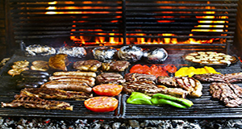

La Parillada
Contexto Histórico
La Parrilla Argentina surgiu na antiguidade, quando os gaúchos habitavam os pampas.
Quando os gaúchos percorriam as estradas, caçavam as vacas que encontravam soltas e as assavam, sendo este o início do que hoje conhecemos como La Parrilla Argentina.
A arte dos gaúchos consiste em colocar gravetos no chão e em sua capacidade de acendê-los e assim iniciar o cozimento da carne, embora muitas de suas técnicas sejam preservadas para a atual La Parrilla Argentina

Ingredientes:
150g de chinchuline (miúdos de bezerro)Suco de 1 limão
1 cebola grande cortada em rodelas
150g de chorizo de rueda (linguiça argentina)
150g de morcilla (linguiça de sangue)
150g de riñoncitos (rins de bezerro)
150g de mollejas (timo de boi) (estomago)
1 pimentão vermelho cortado em tiras
MODO DE PREPARO:
Em uma panela, coloque os chinchulines e cubra-os com água.
Aqueça-os, acrescentando o suco de limão e a cebola.
Quando ferver, abaixe o fogo e cozinhe por 3 horas.
Tire os chinchulines da água e coloque-o na grelha junto com o chorizo, a morcilla, o riñocitos, e as mollejas.
Acrescente o pimentão vermelho por cima dos miúdos e asse por 20 minutos na grelha ou por 30 minutos no forno convencional.
Sirva em seguida.